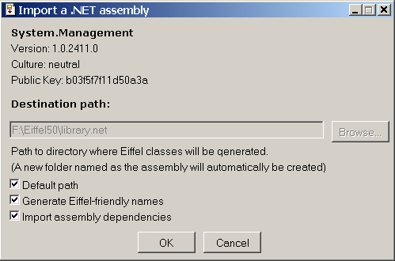
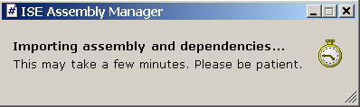

The Import Dialog
This dialog lets you import shared assemblies into the Eiffel
Assembly Cache. You can
To choose the destination path where the classes will be generated,
either:
- Leave the box Default path checked. The files will be
saved in the path written in the disabled text field.

- Uncheck the box Default path. Enter the path to the saved
files either by typing it in or by browsing for it.
-
Uncheck Generate Eiffel-friendly names to keep the
original .NET method names in the generated external
classes.
-
Click Cancel to quit the Import Dialog without importing
any assembly.
-
Click Ok to start the generation process. The following
message box appears:
